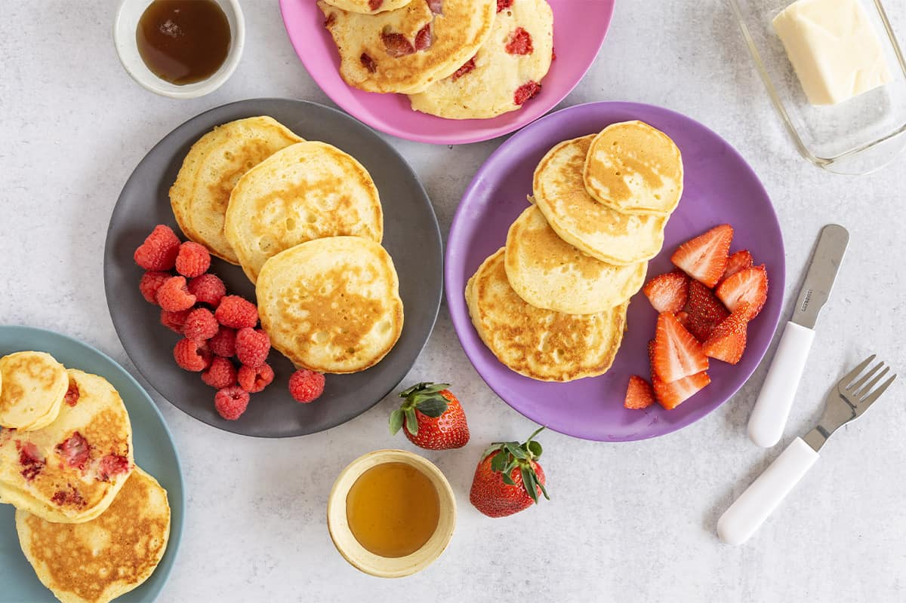

Greek Yogurt Pancakes
Quick and easy, high protein breakfast.
View Recipe
Simple breakfast, lunch, dinner, and snack ideas for picky eaters and busy families.
Explore Meals
Quick and easy, high protein breakfast.
View Recipe
Cold lunch ideas for school.
See Recipe
Delicious and family favorite.
View RecipeThis site is designed for parents who need realistic meal ideas for picky eaters. Each section includes quick, kid-friendly recipes that are simple to make and easy to adjust.